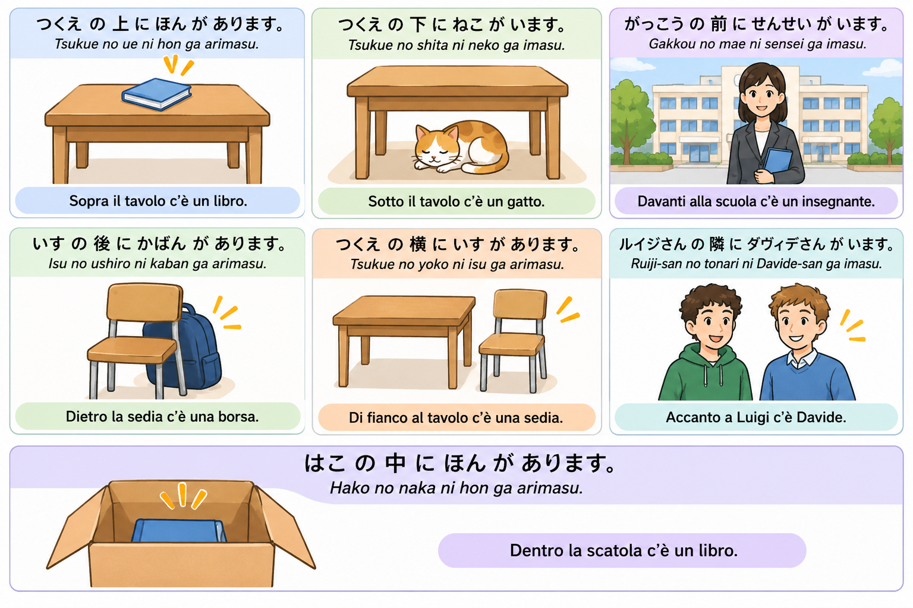

Obiettivi
- Dire «non è» con ではありません e じゃありません, riprendendo il capitolo 3 della lezione 3.
- Distinguere います e あります per dire che qualcuno o qualcosa c’è.
- Descrivere una posizione con nome + の + posizione + に.
- Leggere sette parole di posizione con i furigana, senza dover già conoscere i kanji.
- Usare も per dire «anche» e costruire brevi dialoghi.
Gli spazi nelle frasi sono didattici. Manteniamo le romanizzazioni del corso: ou e uu per le grafie corrispondenti; は si trascrive wa quando è particella, anche in dewa arimasen. I piccoli hiragana sopra i kanji sono i furigana: indicano come leggere, non sono suoni da aggiungere. Per ora basta riconoscere le parole; non è richiesta la scrittura dei kanji a memoria.
1. Riprendiamo «non è»: ではありません e じゃありません
Questo argomento era nella lezione 3, ma lo affrontiamo qui senza darlo per acquisito. Nelle frasi con un nome, です esprime «è / sono». Per negare, sostituiamo です con ではありません (dewa arimasen). La forma contratta じゃありません (ja arimasen) è comune nel parlato e rimane cortese; la forma estesa è più formale.
A は B です。 → A は B ではありません。
| Giapponese | Romaji | Italiano |
|---|---|---|
| これ は ほん です。 | Kore wa hon desu. | Questo è un libro. |
| これ は ほん ではありません。 | Kore wa hon dewa arimasen. | Questo non è un libro. |
| わたし は せんせい じゃありません。 | Watashi wa sensei ja arimasen. | Non sono un insegnante. |
In ではありません, は si legge wa. Non aggiungere です dopo ありません. Questo modello serve qui per i nomi: non applicarlo automaticamente agli aggettivi in -い. Per esempio, «non è rosso» è あかくない です, akakunai desu, non «あかい ではありません».
Rispondere e correggere
A: これ は じしょ ですか。
Kore wa jisho desu ka. — Questo è un dizionario?
B: いいえ、じしょ ではありません。ざっし です。
Iie, jisho dewa arimasen. Zasshi desu. — No, non è un dizionario. È una rivista.
2. «C’è / ci sono»: います e あります
Per indicare l’esistenza o la presenza usiamo due verbi. Nel modello di base, います (imasu) si usa per persone e animali; あります (arimasu) per oggetti e piante. Non dipende soltanto dall’essere biologicamente vivo: un albero si descrive normalmente con あります. Queste forme valgono sia per «c’è» sia per «ci sono»; il verbo non cambia per il plurale.
が (ga) indica qui la persona, l’animale o la cosa di cui affermiamo la presenza. Non fa parte del verbo: il modello è nome + が + います / あります.
| Giapponese | Romaji | Italiano |
|---|---|---|
| ねこ が います。 | Neko ga imasu. | C’è un gatto. |
| せんせい が います。 | Sensei ga imasu. | C’è un insegnante. |
| ほん が あります。 | Hon ga arimasu. | C’è un libro. |
| き が あります。 | Ki ga arimasu. | C’è un albero. |
Il negativo: «non c’è»
| Affermativo | Negativo | Significato del negativo |
|---|---|---|
| います — imasu | いません — imasen | non c’è / non ci sono: persone e animali |
| あります — arimasu | ありません — arimasen | non c’è / non ci sono: oggetti e piante |
ねこ は いません。ほん は ありません。
Neko wa imasen. Hon wa arimasen. — Il gatto non c’è. Il libro non c’è.
Distingui «non è» da «non c’è»: これ は ほん ではありません。 Kore wa hon dewa arimasen. = Questo non è un libro. ほん は ありません。 Hon wa arimasen. = Il libro non c’è. Nel primo caso neghiamo l’identità; nel secondo, la presenza. Nel negativo incontriamo spesso は; non significa che が sia sempre impossibile nelle frasi negative.
3. Vocabolario: le posizioni relative
Leggi i kanji con l’aiuto dei furigana. Per dire «sopra / sotto / davanti a qualcosa», mettiamo prima il nome del riferimento e poi の + la posizione: つくえ の 上, tsukue no ue, «sopra il tavolo».
| Parola con furigana | Romaji | Italiano |
|---|---|---|
| 上 | ue | sopra |
| 下 | shita | sotto |
| 前 | mae | davanti |
| 後ろ | ushiro | dietro |
| 横 | yoko | di lato, accanto |
| 隣 | tonari | accanto, il vicino nella disposizione |
| 中 | naka | dentro |
横 mette in evidenza il lato; 隣 la vicinanza immediata, come due posti o due edifici adiacenti. I significati possono sovrapporsi: non sono sempre intercambiabili, ma nemmeno opposti rigidi.
Parole utili per gli esempi: つくえ tsukue = tavolo / scrivania; いす isu = sedia; はこ hako = scatola; へや heya = stanza; ねこ neko = gatto; いぬ inu = cane; き ki = albero. Riprendiamo anche ほん hon, かばん kaban, がっこう gakkou e せんせい sensei.
4. Dire dove si trova qualcosa o qualcuno
Presentare ciò che c’è in un luogo
Modello: luogo + に + nome + が + あります / います. に (ni) indica il luogo di esistenza. Con una posizione relativa: riferimento + の + posizione + に + nome + が + verbo.

| Giapponese | Romaji | Italiano |
|---|---|---|
| つくえ の 上 に ほん が あります。 | Tsukue no ue ni hon ga arimasu. | Sopra il tavolo c’è un libro. |
| つくえ の 下 に ねこ が います。 | Tsukue no shita ni neko ga imasu. | Sotto il tavolo c’è un gatto. |
| がっこう の 前 に せんせい が います。 | Gakkou no mae ni sensei ga imasu. | Davanti alla scuola c’è un insegnante. |
| いす の 後ろ に かばん が あります。 | Isu no ushiro ni kaban ga arimasu. | Dietro la sedia c’è una borsa. |
| つくえ の 横 に いす が あります。 | Tsukue no yoko ni isu ga arimasu. | Di fianco al tavolo c’è una sedia. |
| ルイジさん の 隣 に ダヴィデさん が います。 | Ruiji-san no tonari ni Davide-san ga imasu. | Accanto a Luigi c’è Davide. |
| はこ の 中 に ほん が あります。 | Hako no naka ni hon ga arimasu. | Dentro la scatola c’è un libro. |
Localizzare qualcosa di cui stiamo già parlando
Se parliamo del libro e vogliamo dire dove si trova, lo mettiamo come tema con は: nome + は + luogo + に + あります / います.
ほん は つくえ の 上 に あります。
Hon wa tsukue no ue ni arimasu. — Il libro è sopra il tavolo.
どこ (doko) significa «dove». La particella finale か rende interrogativa la frase cortese.
ねこ は どこ に いますか。
Neko wa doko ni imasu ka. — Dove si trova il gatto?
つくえ の 下 に います。
Tsukue no shita ni imasu. — È sotto il tavolo.
Tre particelle, tre funzioni: の collega il riferimento alla posizione; に indica dove; が presenta ciò che c’è. In ほん は… il libro diventa invece il tema. Per ora usiamo questi modelli: non sono una spiegazione completa di tutti gli usi di は e が.
5. La particella も: «anche»
も (mo) si mette dopo l’elemento che aggiungiamo: «anche questo», «anche io», «anche il cane». Nei modelli qui studiati prende il posto di は o が: non scrivere «はも» o «がも».
Anche con です
これ は ほん です。それ も ほん です。
Kore wa hon desu. Sore mo hon desu. — Questo è un libro. Anche quello è un libro.
Anche con i verbi di esistenza
へや に ねこ が います。いぬ も います。
Heya ni neko ga imasu. Inu mo imasu. — Nella stanza c’è un gatto. C’è anche un cane.
つくえ の 上 に ほん が あります。かばん も あります。
Tsukue no ue ni hon ga arimasu. Kaban mo arimasu. — Sopra il tavolo c’è un libro. C’è anche una borsa.
も con il negativo: «neanche»
わたし は せんせい ではありません。ルイジさん も せんせい ではありません。
Watashi wa sensei dewa arimasen. Ruiji-san mo sensei dewa arimasen. — Non sono un insegnante. Neanche Luigi è un insegnante.
Con una particella di luogo come に, も può aggiungersi: にも, «anche in / anche a». Non è quindi una regola generale che も cancelli tutte le particelle. Per gli esercizi di oggi ci concentriamo sulla sostituzione di は e が.
6. Mini-dialoghi: cerchiamo e descriviamo
Dov’è il libro?
A: ほん は どこ に ありますか。
Hon wa doko ni arimasu ka. — Dov’è il libro?
B: はこ の 中 に あります。
Hako no naka ni arimasu. — È dentro la scatola.
Non è un gatto
A: つくえ の 下 に ねこ が いますか。
Tsukue no shita ni neko ga imasu ka. — C’è un gatto sotto il tavolo?
B: いいえ、ねこ は いません。いぬ が います。
Iie, neko wa imasen. Inu ga imasu. — No, il gatto non c’è. C’è un cane.
B: あの どうぶつ は ねこ ではありません。いぬ です。
Ano doubutsu wa neko dewa arimasen. Inu desu. — Quell’animale non è un gatto. È un cane.
どうぶつ doubutsu = animale. Non usiamo あれ come riferimento neutro a una persona.
A coppie: mettete un libro e una borsa in due posizioni diverse. Chiedete dove sono e rispondete. Poi aggiungete un altro oggetto e usate も. Descrivete soltanto ciò che vedete davvero.
Esercizi
A. «Non è»
Trasforma usando la forma richiesta.
1. これ は ほん です。 → ではありません
2. わたし は せんせい です。 → じゃありません
B. います o あります?
1. ねこ が ___。
2. ほん が ___。
3. せんせい が ___。
4. き が ___。
C. Leggi le posizioni
1. 上 2. 下 3. 前 4. 後ろ 5. 横 6. 隣 7. 中
Scrivi lettura e significato. Poi copri i furigana e prova a riconoscere le parole: non è una prova di scrittura dei kanji.
D. Completa le particelle
1. つくえ ___ 上 ___ ほん ___ あります。
2. ねこ ___ つくえ の 下 に います。
Nella frase 1 presenta ciò che c’è; nella frase 2 il gatto è già il tema.
E. Aggiungi «anche»
1. これ は ほん です。それ ___ ほん です。
2. へや に ねこ が います。いぬ ___ います。
3. わたし は せんせい ではありません。ルイジさん ___ せんせい ではありません。
F. Traduci e distingui
1. Questo non è un libro.
2. Dentro la scatola non c’è il libro.
3. Davanti alla scuola c’è un insegnante.
4. Dov’è il gatto?
Soluzioni — apri dopo aver provato
A: 1. これ は ほん ではありません。 2. わたし は せんせい じゃありません。
Kore wa hon dewa arimasen. / Watashi wa sensei ja arimasen.
B: 1. います imasu; 2. あります arimasu; 3. います imasu; 4. あります arimasu.
C: 1. ue, sopra; 2. shita, sotto; 3. mae, davanti; 4. ushiro, dietro; 5. yoko, di lato / accanto; 6. tonari, accanto / il vicino nella disposizione; 7. naka, dentro.
D: 1. の no; に ni; が ga. 2. は wa.
E: 1–3. も mo. Nella frase 3 si traduce «neanche».
F1: これ は ほん ではありません。
Kore wa hon dewa arimasen. È corretta anche la variante con ja arimasen.
F2: ほん は はこ の 中 に ありません。
Hon wa hako no naka ni arimasen.
F3: がっこう の 前 に せんせい が います。
Gakkou no mae ni sensei ga imasu.
F4: ねこ は どこ に いますか。
Neko wa doko ni imasu ka.
Compito a casa
- Scrivi due frasi nominali negative: una con ではありません e una con じゃありません.
- Disegna una stanza con un tavolo, una sedia, una scatola, oggetti e un animale. Scrivi quattro frasi di posizione coerenti con il disegno, usando sia あります sia います.
- Aggiungi una frase con も e una domanda con どこ.
- Rileggi le sette posizioni con i furigana. Non serve imparare a scriverne i kanji a memoria.
Approfondimenti: Esistenza: いる e ある — Tofugu · La particella に — Tofugu · La particella も — Tofugu.
Corso per principianti a cura di Davide Chiaramonte e Perplexity AI.